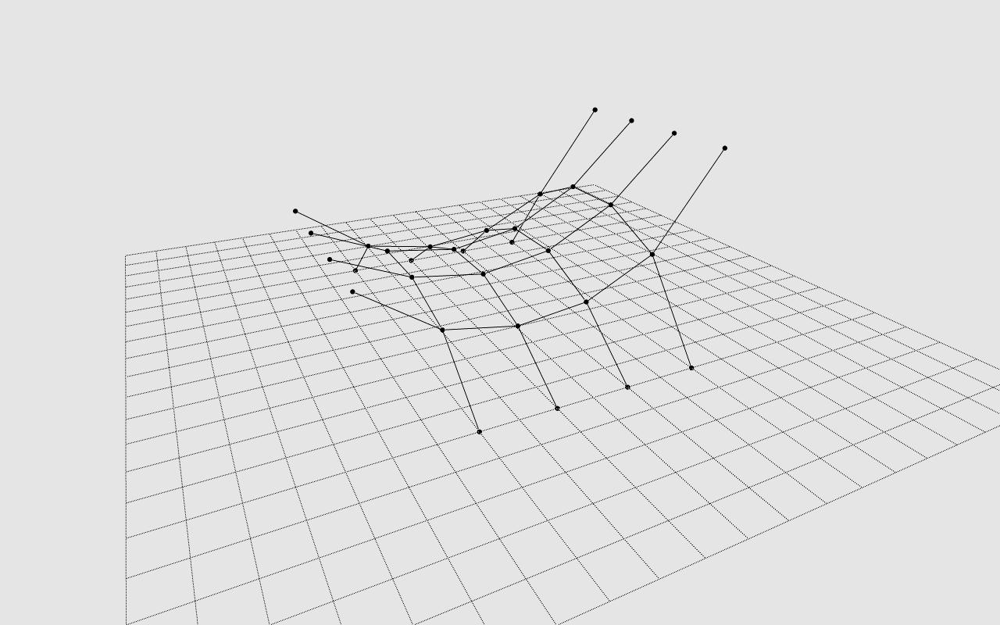

Network equilibrium

"""Cablenet equilibrium.
- make a network from sample data
- set default vertex and edge attributes
- identify *anchored* vertices
- convert network data to numerical data
- use a *key-index map* to reference items in the numerical data
- run the force density method
- update the network
- make a viewer and display the result
Note
----
This examples requires PyOpenGL for visualization.
"""
import compas
from compas.datastructures import Network
from compas.viewers import NetworkViewer
from compas.numerical import fd_numpy
__author__ = ['Tom Van Mele', ]
__copyright__ = 'Copyright 2017, BRG - ETH Zurich',
__license__ = 'MIT'
__email__ = 'van.mele@arch.ethz.ch'
# make a network from sample data
# set default vertex and edge attributes
network = Network.from_obj(compas.get('saddle.obj'))
dva = {'is_anchor': False, 'px': 0.0, 'py': 0.0, 'pz': 0.0}
dea = {'q': 1.0}
network.update_default_vertex_attributes(dva)
network.update_default_edge_attributes(dea)
# identify *anchored* vertices
for key in network.vertices():
network.vertex[key]['is_anchor'] = network.is_vertex_leaf(key)
# extract the structural data required for form finding
# run the force density method
# extract the updated coordinates from the result
key_index = network.key_index()
xyz = network.get_vertices_attributes(('x', 'y', 'z'))
loads = network.get_vertices_attributes(('px', 'py', 'pz'))
q = network.get_edges_attribute('q')
fixed = network.vertices_where({'is_anchor': True})
fixed = [key_index[key] for key in fixed]
edges = [(key_index[u], key_index[v]) for u, v in network.edges()]
res = fd_numpy(xyz, edges, fixed, q, loads)
xyz = res[0]
# update the network
# and visualize the result
for key, attr in network.vertices(True):
index = key_index[key]
attr['x'] = xyz[index, 0]
attr['y'] = xyz[index, 1]
attr['z'] = xyz[index, 2]
viewer = NetworkViewer(network)
viewer.setup()
viewer.show()